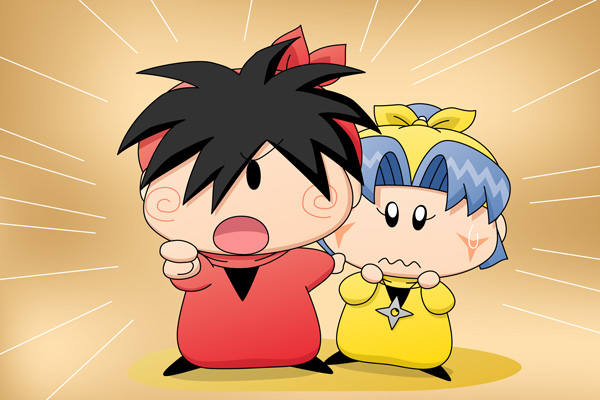

ミルモ「何だヤシチ、起きてたのかよ」
ムルモ「ヤシチしゃん、せっかくいいところなんだから
邪魔しないでくだしゃい！」
ヤシチ「むむ、歓迎されてないとは…」
話を元に戻そうとムルモはヤマネたちの方に再び視線を向けると、ヤマネは笑顔を浮かべながらヤシチの元へと駆け寄っていきました。
ヤマネ「ヤシチ兄様～っ」
ヤシチ「おぅ、ヤマネは大丈夫だったのか？」
ヤマネ「はいっ、私もヤシチ兄様のことがずっと心配でございました！」
アクミ「で、ヤマネが犯人じゃねぇってのはどういうことなんだよ？」
ヤシチ「おほんっ、それはだな・・」
パンタ「ドキドキするですっち～」
ヤシチ「拙者が殴られた時間に部屋にやってきたのが
ミルモっ！ お主だったからだ！」
と、ヤシチはミルモに向かってびしっと指さしました。

ミルモ「何～～っ」
リルム「そんな・・・ミルモ様が！？
きっと何かの間違いでは？」
ヤシチ「いいやそんなことはない！
あれは確かにミルモだった」
クモモ「ミルモさん、テレビを見ていたのは嘘で、
その時間はヤシチさんの部屋へ行ってたクモね」
ミルモ「んなわけあるかよっ。
オレがヤシチの部屋へ行く理由なんてねーだろ！？」
ヤシチ「拙者もあの時間は『妖精探検隊』を見ていたのだが…。
そこにミルモが現れて、拙者がテレビが壊れたのか？と聞いたら
ミルモが頷くから、本当は嫌なんだが仕方な～く部屋に案内したのだ」
リルム「そこをヤシチさんが油断したスキにがつ～～んっとですか？ミルモ様」
ミルモ「だからオレじゃねえって・・・。
そうだ、オレも最初から最後まで『妖精探検隊』を見ていたから、
内容を全部話せばアリバイは証明されるよな」
ムルモ「それはどうでしゅかね～。
今週の『妖精探検隊』は再放送だったでしゅからね～」
ミルモ「ひえぇ、ムルモ何てことを～～っ」
サスケ「パピィの事件も、きっとミルモの仕業だぜ」
ヤシチ「その通り！
さっきまで話を聞いていたが、ニコニコンＣ入りのコーヒーマシュマロに
目印を付けておけば、自分の席にそれがあったとしても食べなければ
いいし、まず自分の席にそれが来る確率は相当低いからな。
そうやって事件を分かりにくくさせたのであろう」
パンタ「ヤシチお兄ちゃん、たっぷり寝て頭がすごく冴えてるですっち」
クモモ「そうやって事件を分かりにくくさせて、ミルモさんのことに気付いた
アロマさんにも手をかけたクモね」
アクミ「アロマが気付いたと言ってたのはやっぱりミルモの姿だったのか…」
クモモ「ミルモさん、ミルモの里に戻ってから詳しく話を聞かせて
もらうクモよ」
ミルモ「もうっ、だからオレじゃねえってのに・・・」
アクミ「お菓子の恨みとはいえやり過ぎだったな、ミルモ」
パンタ「ミルモお兄ちゃんならやりそうですっち」
ミルモ「パンタ、お前まで～～っ」
頭を抱えるミルモにみんなの注目が集まります。妖精たちにとっては、犯人が分かれば事件のトリックについてはどうでもいいようです。ムルモを除いては。
ムルモはヤシチの背中に隠れているヤマネの方を見てみました。ムルモの視線に気がついたヤマネと目が合いましたが、きっとにらみ返されて、ムルモは思わず視線を逸らしてしまいました。
久々のくせにかなり急展開になってしまい申し訳ありません。もちろんミルモは犯人でも何でもないのですが、真犯人とトリック(?)については残り２回のストーリーで明らかにしていこうと思います。どうか最後までお付き合いよろしくお願いしますm(_ _)m。
(2009/3/22)